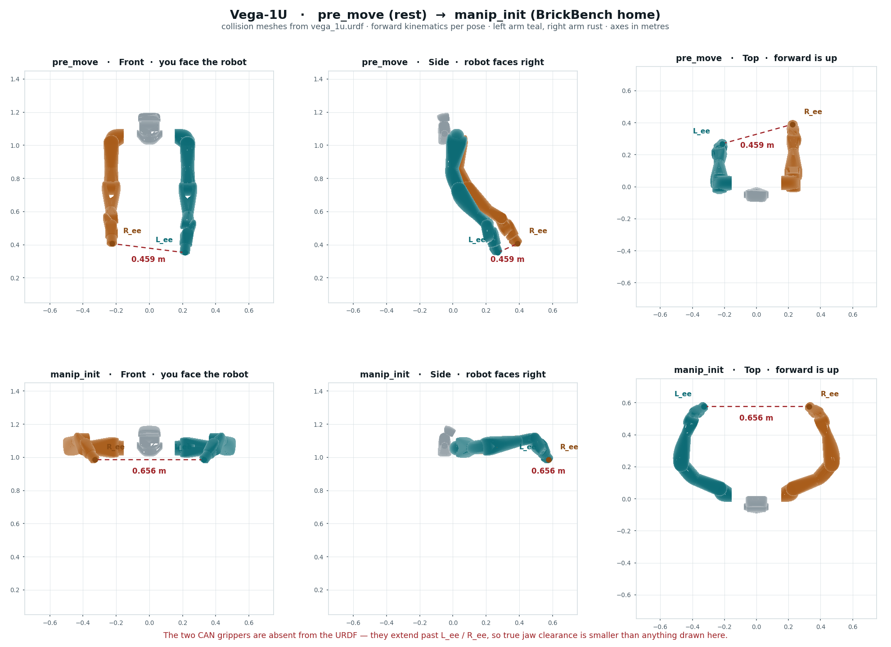

Part A
Every session
The robot is configured and running. This is all you need for day-to-day work.
Connecting today
Current setupThis robot is already set up. Nothing in Part B needs repeating — the certificate is installed, the libraries are in place, and the Jetson joins YOUR_WIFI on its own at boot. A normal session is: SSH in, run a script onboard.
| What | Value | Notes |
|---|---|---|
| Reach the robot | ssh dexmate@ROBOT_IP | Password YOUR_SSH_PASSWORD (the factory default). A key is also configured, so it may not prompt. |
| Where code runs | Onboard, in ~/py_scripts/ | Lowest latency, and everything is already installed there |
| Robot name | dm/YOUR_SERIAL-1u | Must be passed explicitly — see below |
| Wired fallback | 192.168.50.20 | Plug into the IO hub; your machine takes 192.168.50.x (not .20/.21) |
| SoC portal | https://192.168.50.21:57832 | Needs sshuttle from off-robot; only for certificates and firmware |
When you have to spell out ROBOT_NAME
Dexmate pre-sets ROBOT_NAME on the Jetson, so once you are sitting in an interactive shell it is already there — echo $ROBOT_NAME confirms it, and scripts run normally with no prefix. The prefix matters in exactly one situation: a command that never gets an interactive shell, because ~/.bashrc is not sourced and Robot() then raises ValueError.
| How you run it | ROBOT_NAME | Prefix needed? |
|---|---|---|
ssh in, then run commands | Already set | No |
ssh dexmate@… 'python3 script.py' | Not set | Yes |
cron, systemd units, nohup from a one-liner | Not set | Yes |
ssh dexmate@ROBOT_IP \ 'ROBOT_NAME="dm/YOUR_SERIAL-1u" python3 ~/py_scripts/inspect_joints.py'
A session, start to finish
ssh dexmate@ROBOT_IP # is the robot healthy and talking? dextop topic list --timeout 10 dextop doctor check # where are the joints right now? (before commanding any motion) python3 ~/py_scripts/inspect_joints.py
That is the whole required part. Everything below is per-task — bring up only the subsystem you are about to use.
systemctl status dexsensor wrist-camera-init.service --no-pager cat /run/wrist-cameras/ready.json
The head service already runs on this unit. Subscribe with A2; the wrist API starts capture on demand. Wiring and boot configuration are in B9.
sudo modprobe gs_usb # asks for YOUR_SSH_PASSWORD sudo ip link set can1 up type can bitrate 1000000 \ loopback off listen-only off # ip is NOPASSWD
cd ~/py_scripts && python3 goto_ready.py --dry-run
Cameras (A2), grippers (A5) and arm motion (A4) are independent of each other. For arms always go through the named poses, never a pose_pool entry.
Every Robot() drives the head to home, and no flag prevents it — so inspect_joints.py and any other script that opens a session will move it. If you only need pixels, use ~/py_scripts/sensor_only.py, which builds Sensors() directly and publishes no control topic at all. Details in A2.
Only three things are passwordless in sudoers: /usr/sbin/ip, tee to the one USB authorized path, and systemctl {stop,restart,start} dexsensor.service. Anything else — modprobe, editing the dexsensor toml — needs YOUR_SSH_PASSWORD typed at an interactive prompt, so it cannot run over a non-interactive ssh.
When the IP has moved
ROBOT_IP is a DHCP lease on YOUR_WIFI and will change eventually. When SSH stops answering, in ascending order of effort:
- Scan the subnet:
nmap -sn 172.26.160.0/22 | grep -B2 -A2 "vega\|dexmate\|ubuntu" - Plug in a cable and use the wired address
192.168.50.20, which does not move. - Plug a monitor and keyboard into the IO hub and read the address off the desktop.
A new IP does not mean re-running setup. The certificate, robot name, firmware and libraries all live on the robot and survive an address change — only ROBOT_IP (if you export it) and your SSH target need updating.
Working from a workstation instead
We currently run everything onboard. Driving the robot from your own machine is possible but needs its own one-time setup — dextop, the same certificate unpacked locally, and the environment variables — described in B3. It buys you a better GPU at the cost of network latency.
Reading sensor data
The head camera is published by the existing dexsensor service. The two OEM wrists use the local WristCameras Python API. Both can be read together. Use the sensor-only examples below to obtain images without constructing Robot(), which homes the head. Setup: B9.
Joints, current, wrench, buttons — no dexsensor needed
from dexcontrol.robot import Robot robot = Robot() robot.left_arm.get_joint_pos() # joint positions robot.left_arm.get_joint_vel() # joint velocities robot.right_arm.get_joint_current() # current — arms only robot.left_arm.wrench_sensor.get_wrench_state() # [fx,fy,fz,tx,ty,tz] robot.right_arm.wrench_sensor.get_button_state() # blue / green wrist buttons robot.shutdown()
Head camera: subscribe to the running service
Run on the Jetson as dexmate with the installed system Python. Set the robot name explicitly in non-interactive shells. Do not launch a second head service or open another ZED SDK camera while dexsensor owns it.
export ROBOT_NAME=dm/YOUR_SERIAL-1u
from dexcontrol.core.config import get_robot_config
from dexcontrol.sensors.manager import Sensors
configs = get_robot_config()
configs.sensors["head_camera"].enabled = True
sensors = Sensors({"head_camera": configs.sensors["head_camera"]})
try:
sensors.wait_for_all_active(timeout=10)
head = sensors.head_camera.get_obs(
obs_keys=["left_rgb", "right_rgb", "depth"],
include_timestamp=True,
)
if any(head[k] is None for k in ("left_rgb", "right_rgb", "depth")):
raise RuntimeError("Head streams are not ready")
rgb = head["left_rgb"]["data"]
print(rgb.shape, head["left_rgb"]["timestamp_ns"])
print(sensors.head_camera.get_camera_info())
finally:
sensors.shutdown()With include_timestamp=True, each stream returns a record with data, timestamp_ns and receive_time_ns; a stream can be None before it is ready. With the default include_timestamp=False, each value is the array directly. Left/right RGB are (1200, 1920, 3); depth is a (1200, 1920) floating-point array in metres.
The field is enabled, not enable. The wrong name throws no error and simply does nothing. And configs.sensors is a plain dict, so the wiki's attribute-style example (configs.sensors.head_camera.enable) does not work on this version. Client-side enabling is per-script and never persists.
Depth needs two switches. In /etc/dexmate/dexsensor/default.toml, depth_mode = "NEURAL" only says how depth would be computed; [sensors.streams] depth controls whether it is published. With the stream off, dexsensor tells the SDK DEPTH_MODE::NONE — so the log says NONE while the config appears to say NEURAL. Set enabled = true too, or the service starts no sensors at all; dexsensor enable <x> is runtime-only and lost on restart. These edits are backed up to default.toml.bak — a .deb upgrade may overwrite them.
The head camera streams RGB, not BGR, despite ZED's usual convention. cv2.imwrite and cv2.VideoWriter both want BGR, so frames need cv2.COLOR_RGB2BGR or red and blue come out swapped (a brown table renders blue). PIL assumes RGB and is correct as-is.
Head camera resolution and intrinsics
Current head settings: HD1200, 1920×1200, configured 30 fps, NEURAL depth. In /etc/dexmate/dexsensor/default.toml, locate the sensor whose id = "head_camera", then its parameters and stream flags. Do not edit by line number. The generic ZED X One wrist entries must stay disabled: they do not describe these ISX031 cameras. Measured throughput is listed in B9.
sudo cp -a /etc/dexmate/dexsensor/default.toml /etc/dexmate/dexsensor/default.toml.camera-$(date +%Y%m%d-%H%M%S).bak sudoedit /etc/dexmate/dexsensor/default.toml # After saving the intended head settings (interrupts head streaming): sudo systemctl restart dexsensor.service
Configuration edits require administrator privileges. Normal head and wrist API reads run without sudo.
Runtime rectified intrinsics at HD1200, from head_camera.get_camera_info() — distortion is empty because the stream is already rectified:
image_width: 1920
image_height: 1200
K: [734.7626953125, 0.0, 966.6296997070312,
0.0, 734.7626953125, 653.073486328125,
0.0, 0.0, 1.0]
# example from 2026-09-15 · query runtime for current calibration
# distortion [] · baseline ~0.0497 m · serial YOUR_CAMERA_SERIAL · ZedXMinicv2.imwrite and cv2.VideoWriter want BGR, so convert with cv2.COLOR_RGB2BGR or red and blue come out swapped — the giveaway is the wooden table rendering blue. PIL assumes RGB and is correct with no conversion.
Two wrists: local Python API
On the Jetson, use /usr/bin/python3 as dexmate (already in the video and i2c groups). Wrist-only reads require neither sudo nor ROBOT_NAME. Code is installed in /opt/wrist-cameras/ and exposed through wrist_cameras_local.pth in the system Python 3.10 dist-packages directory. A separate virtual environment may not see this module or its GStreamer bindings.
from wrist_cameras import WristCameras
with WristCameras() as cameras:
for _ in range(30):
obs = cameras.get_obs(timeout=3)
rgb_a = obs["wrist_a"]["rgb"]
rgb_b = obs["wrist_b"]["rgb"]
print(rgb_a.shape, rgb_b.shape,
obs["wrist_a"]["frame_id"], obs["wrist_b"]["frame_id"])
# Context exit stops capture/trigger and releases both devices.| Field / method | Contract |
|---|---|
obs["wrist_a"], obs["wrist_b"] | A/B identify camera links; physical left/right assignment has not been confirmed. |
rgb | Independent numpy.uint8 RGB copy, shape (1536, 1920, 3). |
frame_id | Increasing frame count within this open session. |
timestamp_ns | GStreamer pipeline presentation timestamp (PTS), not Unix time. |
received_monotonic_ns | Receipt time on this Jetson's monotonic clock. |
get_obs(timeout=2.0, fresh=True) | Waits for both cameras to advance since the previous call; raises TimeoutError if they do not. fresh=False allows the latest available pair. |
The API discovers V4L2 devices by their sensor names, owns both wrists under one lock and runs software triggering in a separate process. A second reader is rejected with RuntimeError. Always close the context before restarting initialization. This is a local API, not a network endpoint; it is not registered as robot.sensors.left_wrist_camera or right_wrist_camera.
Read head + both wrists in one process
Set ROBOT_NAME as above, save this as a Python script on the Jetson, then run it with /usr/bin/python3. The existing head publisher continues running while the wrist context acquires its two cameras.
from dexcontrol.core.config import get_robot_config
from dexcontrol.sensors.manager import Sensors
from wrist_cameras import WristCameras
configs = get_robot_config()
configs.sensors["head_camera"].enabled = True
sensors = Sensors({"head_camera": configs.sensors["head_camera"]})
try:
sensors.wait_for_all_active(timeout=10)
with WristCameras() as wrists:
for _ in range(30):
wrist = wrists.get_obs(timeout=3, fresh=True)
head = sensors.head_camera.get_obs(
obs_keys=["left_rgb", "right_rgb", "depth"],
include_timestamp=True,
)
if any(head[k] is None for k in ("left_rgb", "right_rgb", "depth")):
raise RuntimeError("Head streams are not ready")
head_left = head["left_rgb"]["data"]
head_right = head["right_rgb"]["data"]
depth = head["depth"]["data"]
wrist_a = wrist["wrist_a"]["rgb"]
wrist_b = wrist["wrist_b"]["rgb"]
print(head_left.shape, wrist_a.shape, wrist_b.shape)
finally:
sensors.shutdown()The head call returns the latest published data and may repeat a frame; use its timestamp_ns to detect repeats. Wrist freshness is checked separately. There is no verified hardware exposure synchronization. Head timestamps and wrist pipeline PTS use different time bases, so do not subtract them to infer alignment.
To save an RGB frame with OpenCV, convert it first:
import cv2
if not cv2.imwrite("wrist_a.png", cv2.cvtColor(wrist_a, cv2.COLOR_RGB2BGR)):
raise RuntimeError("Could not save wrist_a.png")A tested four-view recorder is installed at /home/dexmate/wrist-camera-debug/coexistence/record_api_demo.py. It subscribes through these APIs, waits 15 seconds for the operator, then records; it sends no motion commands. Close other wrist readers first.
ROBOT_NAME=dm/YOUR_SERIAL-1u /usr/bin/python3 /home/dexmate/wrist-camera-debug/coexistence/record_api_demo.py --seconds 45 --output "$HOME/wrist-camera-debug/coexistence/demo-$(date +%Y%m%d-%H%M%S)"
The new output directory contains preview.avi and recording.json. The AVI writer uses a fixed 6 fps; use the JSON's actual capture duration and frame timestamps when measuring time. Encoding a preview does not measure native camera frame rate.
Other sensors / custom dexsensor configuration
This is a generic reference for sensors supported by dexsensor, not an ISX031 wrist setup step. Only launch a custom publisher after stopping any existing publisher that owns the same camera. On this unit, normal head reads use the running service described above.
dexsensor gen-cfg # writes to ~/.dexmate/sensors/
dexsensor launch --config ~/.dexmate/sensors/default_config.yamlBeyond the per-sensor enabled flag, the config file tunes resolution, frame rate, depth range, transport (rtc or zenoh) and JPEG quality — the levers for trading image quality against bandwidth.
Driving the robot
Keep a hand on the e-stop. Arms and torso are position-controlled, wheels are velocity-controlled, and killing the program stops motion — that is the fastest software brake you have.
Head — 3 DOF, but pitch / yaw / pitch
Verified by URDF forward kinematics: head_j1 is pitch, head_j2 is yaw, head_j3 is a second pitch. Negative head_j3 looks down — the vendor's own tucked pose is [0, 0, -1.37], same convention. fy = 734.72 px/rad doubles as the pitch-to-pixel scale, so a pitch error of Δθ shifts the image by 734.72·Δθ pixels.
Robot.__init__ takes only (configs, auto_shutdown). _safe_initialize_components runs a hardcoded step list ending in ("default state", self._set_default_state) (robot.py:353), and _set_default_state (robot.py:424) calls head.set_joint_pos(home_pos) unconditionally unless the software e-stop is active. No flag, config key or environment variable skips it. Re-apply any head pose after construction, in that same session.
A head pose also does not survive process exit: it holds exactly while the session lives (measured: zero drift over 25 s), then relaxes from -0.5056 to about -0.13 rad. Anything that depends on head angle must hold its own live Robot() session.
import numpy as np from dexcontrol.robot import Robot robot = Robot() robot.head.set_joint_pos(np.array([-np.pi/6, 0.0, 0.0]), wait_time=2.0) robot.shutdown()
Arms — 7 DOF, joint space
current = robot.left_arm.get_joint_pos() robot.left_arm.set_joint_pos(current, wait_time=1.0) # absolute delta = np.zeros(7); delta[-1] += 0.2 robot.left_arm.set_joint_pos(delta, relative=True, wait_time=4.0) # relative
Setting wait_time=0 puts you in real-time control: you must then call set_joint_pos continuously at 100–500 Hz. Calling it infrequently produces inadequate motor response.
Hands, torso, chassis
robot.right_hand.close_hand() # torso — not present on this robot; Vega-1 / Pro only robot.torso.set_joint_target(target, tracked=True) # dexcontrol == 0.5.0 robot.torso.set_joint_pos_vel(target, joint_vel=np.ones(3)*0.1, wait_time=3.0) # < 0.5 robot.torso.stop() # chassis — not present on this robot robot.chassis.move_straight(speed=0.4, wait_time=2.0) robot.chassis.move_sideways(speed=0.4, wait_time=2.0) robot.chassis.turn(angular_speed=0.4, wait_time=2.0, center='base_center') robot.chassis.stop()
set_velocity, set_motion_state, set_steering_angle and set_wheel_velocity can permanently damage the wheel motors: steering angles that point the wheels at each other while commanding forward motion, wheel velocities fighting the current steering, or rapid simultaneous changes to both. Stay on move_straight / move_sideways / turn.
Software e-stop
robot.estop.activate() robot.estop.deactivate()
This complements the physical e-stop buttons. It does not replace them.
Moving between poses safely
This robotTwo named poses, two scripts. The thing worth carrying away: the collision risk lives in the schedule, not in the target pose.
The two CAN grippers extend well past L_ee / R_ee and do not exist in vega_1u.urdf — the file dexcontrol and pinocchio actually load. Anything built on that model is blind to them, which is how the vendor's folded pose passed every check and still crossed the jaws into each other on 2026-09-07, severing the left gripper's CAN cable.
There is a fix: vega_1u_gripper.urdf (in ~/Downloads/Dexmate/, and shipped in the dexmate_urdf package) does model the jaws, with L_gripper_joint / R_gripper_joint and real jaw meshes reaching ~0.198 m past the wrist. Point your collision checking at that file, not the plain one, and the numbers below become computable.
Real jaw clearance — measured, not assumed
The gripper-equipped URDF at ~/Downloads/Dexmate/vega_1u_gripper.urdf models the jaws, so clearance can be computed properly: closest point on the left gripper to closest point on the right, over the collision meshes, sampled along a 25-step joint-space interpolation.

pre_move and manip_init are drawn jaws-closed; folded is drawn jaws-open, where the two grippers compute as touching.| Minimum jaw-to-jaw along the move | Concurrent | Left first | Right first |
|---|---|---|---|
pre_move → manip_init | 0.259 m | 0.330 m | 0.367 m |
manip_init → pre_move | 0.259 m | 0.367 m | 0.330 m |
pre_move → folded | 0.052 m | 0.052 m | 0.052 m |
Sequencing buys 7–11 cm on the working move, which is why goto_ready.py and goto_rest.py lead with opposite arms. It buys nothing on folded: all three schedules bottom out at the same 5 cm, because there the collision is in the target pose itself, not in the path.
| Gap at the pose itself | Jaws closed | Jaws fully open |
|---|---|---|
pre_move | 0.367 m | 0.298 m |
manip_init | 0.436 m | 0.333 m |
folded | 0.050 m | 0.000 m — contact |
With the jaws open, folded puts the two grippers in contact — 0.000 m. And that is computed with Dexmate's own gripper model; the third-party CAN grippers actually fitted are larger, so the real interference is worse than this figure shows. It is the direct explanation for the severed cable on 2026-09-07.
The two poses
| Name | Left arm | Right arm |
|---|---|---|
pre_moveparked / rest | [1.7289, 0.0101, 0.0041, -0.9924, -0.2311, 0.5011, -0.0066] | [-1.5683, -0.0026, 0.0031, -0.9916, 0.0908, -0.4138, -0.0018] |
manip_initalias brickbench_home | [0, 1.2, 1.4, -1.57, -1.57, 1, -0.35] | [0, -1.2, -1.4, -1.57, 1.57, -1, 0.35] |
pre_move was recorded from the robot's own resting position, which is what makes it the one pose empirically known to be safe to park in. manip_init is the arm half of BrickBench's 23-long Joint_Home_Position; the wrists end up 0.656 m apart, roughly level with the shoulders.
cd ~/py_scripts && export ROBOT_NAME="dm/YOUR_SERIAL-1u" python3 goto_ready.py # pre_move -> manip_init, right arm first python3 goto_rest.py # manip_init -> pre_move, left arm first python3 goto_ready.py --dry-run # plan + limit check + clearance, no motion
Any flag overrides the script's default, e.g. --step 0.02 --wait 1.0 to go slower, because goto_pose reads the first occurrence and your arguments come first.

vega_1u.urdf collision meshes by forward kinematics. Left arm teal, right arm rust; the dashed line is wrist separation. The grippers are absent from the URDF, so the true jaw clearance is smaller than drawn — which is exactly how folded passed a collision check and still broke a cable.Why the arms move one at a time
Minimum wrist separation along the path, by schedule:
| Direction | Concurrent | Left first | Right first |
|---|---|---|---|
pre_move → manip_init | 0.354 m | 0.431 m | 0.459 m |
manip_init → pre_move | 0.267 m | 0.459 m | 0.434 m |
Concurrent motion is what swings the wrists past each other mid-path. Going back to pre_move with both arms at once dips to 0.267 m — closer than the 0.31 m that actually broke a cable. One arm at a time costs double the wall clock and nothing else, so default to --seq for any large two-arm transfer.
The clearance guard
goto_pose.py simulates the exact waypoints the move will visit — the same per-joint clipping the real loop uses, and the same left/right schedule — computes wrist separation at each one by URDF forward kinematics, and raises SystemExit if any waypoint falls below MIN_WRIST_SEP (0.35 m, override with --min-sep). Calibration points, all from real outcomes:
| Pose / path | Separation | Outcome |
|---|---|---|
folded | 0.31 m | jaws crossed, broke a cable |
manip_init → pre_move, concurrent | 0.267 m | traversed once, no contact |
pre_move ↔ manip_init, concurrent | 0.364 m | traversed twice, no contact |
pre_move endpoint | 0.44 m | fine |
manip_init endpoint | 0.66 m | fine |
Note the 0.267 m row: below the value that caused damage, yet nothing touched. Wrist-centre distance ignores orientation — folded tucks both forearms inward so the jaws face each other, which is far worse than the number alone says. Re-measure rather than lowering the threshold.
folded is banned
folded and folded_closed_hand from the arm pose_pool are in goto_pose.py's BANNED set and refuse to run. They were designed around Dexmate's own end effectors. Do not reach for them as a "safe stow" — pre_move is the stow pose on this robot. Gravity torque is not the criterion either: zero has the lowest static torque of any pose (4.88 N·m) because the arms point straight up, which is an unstable equilibrium with the longest possible fall.
Finishing up
cd ~/py_scripts && export ROBOT_NAME="dm/YOUR_SERIAL-1u" python3 goto_rest.py python3 -c "import gripper; g=gripper.Grippers(); g.release(); g.close_bus()"
Leave the arms energised at pre_move. They hold position on their own; de-energised arms would simply sag. Leaving can1 up between sessions is fine.
Driving the grippers
This robotThe grippers are not part of dexcontrol — the robot reports hand type UNKNOWN, so robot.left_hand does nothing. They are two MG4005-i10 V3 servos on a shared CAN bus, wrapped by /home/dexmate/gripper.py, which you drive in parallel with normal arm control. Wiring, bus rates and the protocol archaeology are in B7; this section is how to use the library.
Since 2026-09-07 motor 1 (left) does not answer on CAN. The swap test settled it: the right gripper's known-good cable made 0x141 reply immediately, so the motor is fine and the left cable has a severed conductor — inside intact-looking jacket, caused by the folded arm pose crossing the two grippers. Until that cable is replaced, everything below works on the right gripper only. The library degrades gracefully: it probes both motors and drives whichever answer.
Before anything: the bus has to be up
sudo modprobe gs_usb # prompts for YOUR_SSH_PASSWORD sudo ip link set can1 up type can bitrate 1000000 \ loopback off listen-only off # NOPASSWD; spell out both flags ip -details -statistics link show can1 # want ERROR-ACTIVE and tx > 3
can0 is the Jetson's own on-SoC controller and is not the adapter — always can1. tx stalling at exactly 3 means nobody is ACKing, not success.
The object model
| Thing | What it is |
|---|---|
Motor | One servo. CAN id 0x140 + id; replies come back on that same id. alive() / _require_alive() raise a message naming the real problem instead of failing deep inside a move. |
Grippers | Both motors plus the calibration frame. Motor 1 = left (0x141), motor 2 = right (0x142) — verified by driving one and watching the jaw, not inferred. |
| Direction | Negative = closed, positive = open, on both sides. Confirmed visually. |
| Coordinates | move_to() takes a fraction 0..1 of the calibrated stroke — 0 closed, 1 open. Raw degrees stay inside the library. |
A normal session
from gripper import Grippers g = Grippers() # opens can1, probes both motors g.home() # find the closed stop on each; ~1 min, do not skip g.both_open() # both jaws, concurrently — 9 s at 500 dps g.both_close() g.both_move_to(0.4, speed=500) # 40% open print(g.position()) # fraction per motor print(g.status()) # angle, current, temp, voltage, error state g.grip(current=0.6) # close until the current limit says contact g.halt() # stop motion, keep the frame g.close_bus() # release the socket, leave motors energised
Homing is not optional
The encoder frame has drifted three separate times between sessions — once by 2545 deg — while the mechanical stroke stayed identical. Always home(); never pass a saved calibration= as your default.
The one legitimate exception: if the previous run ended on halt() and the motors were never de-energised since, the physical frame is still valid, so Grippers(calibration=[left_closed, right_closed]) saves the minute of homing — but verify before moving: read position() and check it matches where you left the jaws (≈0.98 after an open). A mismatch means re-home. After release() or any power cycle, home() is mandatory.
The reason is in the firmware: 0x80 (motor off) discards the multi-turn count, after which the angle reads only the single-turn value wrapped to (−180, 180]. Absolute coordinates are therefore valid only while the motor stays continuously enabled — which is exactly why the driver homes against a real stop at startup and then stays enabled for the whole session.
close() vs grip()
| Call | Behavior | Use it for |
|---|---|---|
close() / both_close() | Drives to the closed position and will stall against anything in the way | An empty jaw, going back to a known state |
grip(current=…) | Closes under a current limit and reports gripped | Any time there is an object. This is the one you want when picking something up |
move_to(f) | One motor to fraction f, blocking | Single-side work only — see the warning below |
both_move_to(f, speed=500) | Fires both 0xA4 commands back-to-back, then polls both | The default for two-jaw motion |
It serialises them: 18.0 s for a full stroke against 9.0 s through both_move_to(), which is wall-clock bounded by the slower motor rather than the sum. gripper_demo.py had exactly this bug and now uses both_move_to whenever both motors answer.
What healthy numbers look like
| Quantity | Healthy | Meaning |
|---|---|---|
| Current, full travel | < 0.3 A | 0.17–0.18 A measured on the right gripper at 500 dps |
| Current, holding | 0.09–0.13 A | The motors self-hold and do not back-drive |
| Current, into a hard stop | ~2.5 A | This is contact, not a fault — it is how home() finds the stop |
| Full stroke | ≈ 4680 deg | Left 4679.5, right 4681.1 — agreeing to 0.03%, which is the cross-check that the calibration is real |
| Full open or close | 9 s at 500 dps | Concurrent. 500 dps costs no more current than slow moves |
| Bus round-trip | 0.62 ms median | 400/400 replies, zero errors, after the L4T downgrade and gs_usb rebuild |
| Voltage / temp | ~24.0 V · ~31 °C | From status() |
Shutting down
| Call | Motors | Calibration frame | When |
|---|---|---|---|
close_bus() | Stay energised, holding | Kept | Pausing between sessions — costs ~0.1 A each and saves the next homing |
halt() · 0x81 | Motion stops, stay energised | Kept | Emergency stop |
release() · 0x80 | De-energised, jaws limp | Destroyed | End of day, or when someone will handle the jaws. home() required next time |
Ctrl-C leaves the motor still executing its last 0xA4 target — the process is gone but the jaw keeps travelling. Call halt() first. Leaving can1 up between sessions is fine.
Two library traps
SocketCAN delivers every frame to every socket, including other processes' outgoing queries. A query and its reply share the same arbitration ID and command byte, so naive matching decodes someone else's query as angle 0.00, current 0.00 — two in a row trip stall detection and produce a phantom (0.0, 0.0, 'stall'). Fixed in gripper.py with _cmd(..., ignore_echo=True) on all telemetry reads (never on 0x88/0x80/0x81, whose replies are legitimately identical to the query). Prefer one client on the bus anyway — and in a REPL, importlib.reload after editing the module.
The motor firmware is a hybrid: read opcodes follow LK Tech legacy, motion opcodes follow MYACTUATOR, which is offset by one. 0xA2 is SPEED closed-loop, not position — sending the current angle as a "hold here" no-op once made a motor rotate continuously into a hard stop. Use 0xA4 absolute position, which carries a speed limit and is therefore abortable, and keep the limit low (~20 dps) on any uncertain move. 0x81 stops, 0x80 switches off.
Files
| Path | What it is |
|---|---|
/home/dexmate/gripper.py | The library: Grippers and Motor |
~/GRIPPER_README.md | Written docs, including "Shutting down safely" |
~/py_scripts/gripper_demo.py | Probes both motors, homes and cycles whichever answer. The right script to run when checking on the broken left cable, since it degrades to one motor |
Trap table: symptom → actual cause
Ordered by what you see first. Most of these are in no documentation — they were found the hard way.
An open circuit, not a short. A CAN_H/CAN_L short floods the bus with error frames and takes the working motor down too; one silent node with a healthy bus means that node is not electrically on the bus. Swap the known-good cable onto the dead gripper — if it answers, the fault is the cable. Do not hunt for short-circuit damage.
Those are error frames, not devices. Filtering received frames only by data != query counts them as replies. Skip m.is_error_frame first.
Every Robot() drives the head to home and no flag prevents it (robot.py:353 → robot.py:424). A head pose also relaxes from -0.5056 to about -0.13 rad once the owning process exits. Hold a live session, or use Sensors() directly if you only need pixels.
gripper.py homing a motor that is off the bus — angle() returned None. Patched: Motor.alive() / _require_alive() now raise a message naming the real problem, and Grippers.home() skips a dead motor instead of aborting the live one.
The camera streams RGB; cv2 wants BGR. Convert with cv2.COLOR_RGB2BGR. PIL needs no conversion.
ROBOT_NAME written as dm-<serial>. The real Zenoh keys are dm/YOUR_SERIAL-1u/... — slash. topic list passing does not mean the name is right.
dextop cert unpack needs the certificate path as an argument.
No route to 192.168.50.21. Either a reflash wiped the static IP on enP8p1s0 (restore 192.168.50.20/24), or you're on an external machine without sshuttle running.
It installs to ~/.local/bin, not on root's PATH. Use sudo -E $(which dextop) ….
dextop node install-service already started the node. Harmless — ignore.
Kernel version mismatch, not a missing driver. Check for /dev/video*, zed_x_daemon and the deserializer modules; the fix here was downgrading L4T 36.5.2 → 36.5.0 (kernel 5.15.199 → 5.15.185).
dexsensor 0.7.6 is built against ZED SDK 5.2.2 and is running on 5.2.3. Warning only.
C++ standard library mismatch: conda update -c conda-forge libstdcxx-ng -y.
The field is enabled, not enable, and it fails silently; configs.sensors is a dict, not an object. Also, dexsensor launch must be running on the Jetson.
depth_mode and [sensors.streams] depth are two separate switches; both must be on, plus enabled = true at the service level. dexsensor enable is runtime-only and lost on restart.
The camera streams RGB. OpenCV wants BGR — add cv2.COLOR_RGB2BGR. PIL needs no conversion.
The grippers are poll-response and never broadcast, so an empty candump proves nothing. Confirm the bus is at 1 Mbit/s and R120 is off.
Classic signature of swapped CAN_H/CAN_L — not even error frames. Alternatively gs_usb.ko stopped loading after a kernel change and needs rebuilding.
You used ssh -X. Use a plain SSH session.
Common for external machines over WiFi. Measure with dextop topic hz <topic>, and set ZENOH_CONFIG and ROBOT_IP.
dextop doctor check, then dextop doctor restart. Confirm dextop / dexcontrol / dexsensor versions match the firmware.
Part B
Reference and one-time setup
Nothing here is part of a normal session. It holds the bring-up that was already done on this robot — repeat it only for a reflash or a second unit — together with the reference material you look things up in: joint limits, and the gripper bus and wiring.
Architecture: three libraries on one Zenoh bus
ReferenceEvery Dexmate component talks over Zenoh, authenticated by a single encrypted certificate. Knowing which library lives on which machine is the prerequisite for everything below — installing one in the wrong place is the most common way to lose an afternoon.
| Component | Where it runs | How to install | What it does |
|---|---|---|---|
dextop | Jetson and workstation | pip install dextop --upgrade | Certificates, firmware, robot server, topic listing, health checks |
dexcontrol | Wherever your control code runs | pip install dexcontrol | The Robot() API: arms, head, hands, torso, chassis, e-stop |
dexsensor | Jetson only | sudo dpkg -i dexsensor_*.deb | Camera and LiDAR capture and streaming; depends on the ZED SDK |
dexbot_utils | Pulled in by dexcontrol | — | Robot configs, URDFs, dexbot cfg list |
| socbridge | The robot's SoC board | dextop firmware install-socbridge | The web portal at https://192.168.50.21:57832 |
Two ways to run
- Onboard — code executes on the Jetson. Lowest latency,
ROBOT_NAMEalready set, and the right default for demos and real-time control. - From a workstation — run AI models on a better GPU and send control over WiFi or Ethernet. You pay latency for the convenience. Both machines must sit on the same LAN, both need
dextop, and both need the same certificate unpacked.
The environment variables
| Variable | Required? | What it does |
|---|---|---|
ROBOT_NAME | Yes | Selects the robot. Robot() raises ValueError without it. Pre-set on the Jetson; export it in every workstation terminal. |
ROBOT_CONFIG | Recommended | Tells control scripts which end effector is fitted. List the options with dexbot cfg list (vega_1u, vega_1u_gripper, vega_1u_f5d6, …). |
ZENOH_CONFIG | Off-robot: effectively yes | Points at ~/.dexmate/comm/zenoh/<cert>/zenoh_peer_config.json5. Needed in practice to pull topics from an external machine. |
ROBOT_IP | Optional | Recent dexcomm uses it to answer queries faster. |
The name must be written dm/YOUR_SERIAL-1u — with a slash. The wiki's prose says dm-<serial>, and that form makes dextop firmware info time out, while the wiki's own sample output uses the slash. Note that dextop topic list passes with either spelling because it globs dm/**, so it is not a valid check that the name is right.
Getting the robot on the network
Done · one-timeA robot with no known WiFi brings up its own hotspot on boot. The rule is: no known network → hotspot; known network in range → joins it and the hotspot disappears. You only do this once per robot.
Three ways to reach a shell
| Method | What you need | Address | Best for |
|---|---|---|---|
| Monitor | DisplayPort cable, USB keyboard and mouse into the IO hub | —, just click the WiFi tray icon | Simplest; no SSH knowledge needed |
| Ethernet | Cable, optionally a switch | 192.168.50.20 | Stable — use it for firmware and certificate work |
| Robot hotspot | Any laptop with WiFi | 10.42.0.1 or 192.168.4.1 | When you have no cables at hand |
For Ethernet, give your own computer a static address first: 192.168.50.x on Vega-1 and Vega-1U (pick any x from 1–255 except 20 and 21). On Vega-1-Pro use 192.168.5.x for the chassis port or 192.168.50.x for the torso port. Netmask 255.255.255.0, gateway empty.
Hotspot credentials by build date
| Batch | SSID | Password | IP |
|---|---|---|---|
| Before Jan 2026 | vega_{mac}_hotspot | YOUR_HOTSPOT_PASSWORD | 192.168.4.1 |
| After Jan 2026 | dexmate-{mac} | YOUR_HOTSPOT_PASSWORD | 10.42.0.1 |
Give it 2–3 minutes after power-on before looking for the hotspot. SSH credentials are always dexmate / YOUR_SSH_PASSWORD.
ssh dexmate@10.42.0.1
Joining your WiFi
# see what's around
timeout 5 sudo iw dev wlP1p1s0 scan > /tmp/scan_results
nmcli device wifi listsudo nmcli device wifi connect "YourNetworkName" password "YourPassword"
sudo nmcli device wifi connect "YourNetworkName" password "YourPassword" \ ip4 JETSON_STATIC_IP/24 gw4 WIFI_GATEWAY
The moment that command succeeds, the hotspot vanishes and your SSH session dies. That is the documented behavior.
Now find the robot on its new network. Use the router's admin page if you have it; otherwise scan:
nmap -sn 192.168.1.0/24 | grep -B2 -A2 "vega\|dexmate"
When it won't connect
- No hotspot appears — wait the full 5 minutes; make sure no saved network is left on the robot (it will join that instead); reboot if needed.
- SSH connection refused — confirm you are actually on the robot's hotspot, that you used the IP for your batch, and that boot has finished.
- WiFi join fails — recheck SSID and password, confirm the network is 2.4 GHz or dual-band, move the robot closer to the router.
- Can't find it on the new network — allow 2–3 minutes; if you set a static IP, restart the router and confirm the address doesn't clash with its settings.
Certificate and firmware — once per robot
Done · one-timeThe certificate is the ticket onto the bus: install it once, it lasts until it expires. Firmware updates are optional; the certificate is not. Dexmate documents two paths, and the certificate can only go through the web portal.
Method 1 · Web portal (required for the certificate)
The SoC board sits on the 192.168.50.x subnet, unreachable from the WiFi side, so open a route first:
sudo apt install sshuttle sshuttle -r dexmate@$ROBOT_IP 192.168.50.0/24
- Open
https://192.168.50.21:57832. First visit asks you to set a password — make it memorable. - Upgrade the dashboard itself first (Check for Updates). If that fails, download the socbridge file from software.dexmate.ai and upload it manually.
- Upload the Dexmate-issued certificate in the communication section.
- Firmware updates, if you want them, happen in the same portal.
Robots shipped before March 2026 may have no socbridge at all — install it from the Jetson with dextop firmware install-socbridge. That command needs a working route to 192.168.50.21; with the static IP on enP8p1s0 wiped by a reflash it only ever prints Failed to connect to SOC: timed out.
Method 2 · Command line (only with a valid certificate already installed)
dextop firmware info # per-board version table dextop firmware update # prompts for the version to install
Upload and install the robot-server file → reboot the robot → once the portal is reachable again, upload the firmware file and install. Versions below 0.5.0 are a single upload.
Keep versions aligned: firmware 0.4.3 needs dextop==0.4.6; once firmware is ≥ 0.4.3, bring dextop, dexcontrol and dexsensor up to latest together.
Workstation communication
Optional · not in useSkip this section if you only ever run code onboard. To drive the robot from your own machine, the workstation has to join the same Zenoh bus.
pip install dextop --upgrade
dextop cert unpack <certificate_file>.dzcfg
dextop cert unpack requires the certificate path; bare, it only returns Missing argument 'PACKAGE_FILE'. Store certificates securely — they are the authority to drive the robot.
dextop node install-service
Below 0.5.0 the relay is manual and has to stay running, so put it in tmux:
tmux new -s relay
dextop node start # then Ctrl+B, D to detachinstall-service starts the node itself, so a follow-up dextop node start fails on port 7447 — harmless, ignore it. Also, dextop installs into ~/.local/bin, which is not on root's PATH: use sudo -E $(which dextop) ….
export ROBOT_NAME=dm/YOUR_SERIAL-1u export ZENOH_CONFIG=~/.dexmate/comm/zenoh/<cert_name>/zenoh_peer_config.json5 export ROBOT_IP=ROBOT_IP
For a fleet, give each robot its own terminal with its own ROBOT_NAME — one workstation drives all of them.
Installing dexcontrol and dexsensor
Done · one-timedexcontrol — control
pip install dexcontrol
Examples are open source at github.com/dexmate-ai. Dexmate suggests running examples/advanced_examples/fold_robot.py first to unfold a new robot — do not run that on this one; see the trap table.
dexsensor — perception, Jetson only
Download the right architecture from software.dexmate.ai (arm64 for Jetson), then:
sudo dpkg -i <dexsensor_xxx>.deb
- Coming from the Python-based
dexsensor ≤ 0.3.1, uninstall it cleanly first, then install≥ 0.6.9. - The ZED SDK ships pre-installed at
/usr/local/zed, with PyZED in the base conda env. For your own environment, runpython get_python_api.pyfrom that directory. ZED SDK not foundwhileimport pyzedworks is a C++ stdlib mismatch:conda update -c conda-forge libstdcxx-ng -y.- Each dexsensor release expects a particular ZED SDK version — pull it from the Stereolabs release archives.
- Never launch dexsensor over
ssh -X; the ZED camera will fail to initialize.
ZED SDK 5.2.3 (ZED_SDK_Tegra_L4T36.5_v5.2.3.zstd.run) + dexsensor 0.7.6 + dextop 0.5.0. dexsensor 0.7.6 is compiled against ZED SDK 5.2.2, so 5.2.3 emits an undefined symbol: getZEDSDKBuildVersion warning — harmless.
Verification and diagnostics
Use any timeRun these before writing any code. Confirming the link works first saves a lot of "is it my script or the robot?"
dextop topic list --timeout 10
The first call from an external machine often returns nothing — dextop needs a moment to reach the robot. Run it again or raise the timeout.
| Command | When to reach for it |
|---|---|
dextop doctor check | First move when the robot behaves oddly; reports hardware-level issues |
dextop doctor restart | When doctor flags the robot server — common right after a firmware update — for a clean restart |
dextop topic hz <topic> | Quantify latency when rates look low, especially over WiFi |
dextop firmware info | Per-board hardware and software versions |
dexsensor status | Per-sensor state: Disabled / Running / Error |
/usr/local/zed/tools/ZED_Explorer -a | Confirm cameras are seen after a ZED SDK install (Rahul's diagnostic) |
Judge from the Zenoh topics in dextop topic list, or from has_component() in code — never from the firmware info table. That table lists firmware bundle entries, not the joints this machine actually has (see below).
What this robot actually has
Reference · this robotVega-1U is the upper body of a Vega-1. Total controllable DOF is 17: left arm 7 (L_arm_j1..j7), right arm 7 (R_arm_j1..j7), head 3 (head_j1..j3). No torso and no chassis — Vega1UConfig.components lists only the two arms, head, estop and heartbeat, and the 16 keys from dextop topic list contain no state/torso or control/torso.
The dextop firmware info table does list a torso board (hw 5, sw 123). That is a firmware-bundle entry, not a joint. Do not read it as "this robot has a waist."
Arm joint limits (rad) — asymmetric between sides
| Joint | Left | Right | Note |
|---|---|---|---|
| j1 | ±3.071 | ±3.071 | |
| j2 | [−0.453, 1.553] | [−1.553, 0.453] | Shoulder pitch — the only joint on this robot that raises anything |
| j3 | ±3.071 | ±3.071 | |
| j4 | [−3.071, 0.244] | [−3.071, 0.244] | |
| j5 | ±3.071 | ±3.071 | |
| j6 | ±1.396 | ±1.396 | |
| j7 | [−1.378, 1.117] | [−1.117, 1.378] | Mirrored — useful as a cross-check on your mapping |
Arm pose_pool: folded, folded_closed_hand, L_shape, lift_up, zero. Head: home, tucked.
folded and folded_closed_hand came within a hair of damaging a gripper. Do not command them, and do not offer them as a safe stow pose.
Why: those poses tuck the forearm hard against the body, and they were designed around Dexmate's own end effectors. This robot carries third-party CAN grippers that stick out well past L_ee / R_ee and do not exist in vega_1u.urdf at all — neither the URDF nor pinocchio's collision checking knows they are there. A pose the kinematic model calls clean can still crush a gripper.
The known-good parked pose is the one the robot was actually sitting in, recorded before the first commanded move and saved as pre_move: left [1.7289, 0.0101, 0.0041, -0.9924, -0.2311, 0.5011, -0.0066], right [-1.5683, -0.0026, 0.0031, -0.9916, 0.0908, -0.4138, -0.0018], head [-0.0883, -0.0338, 0.0486]. Treat every pose_pool entry as unvalidated on this hardware, and judge stow poses by real clearance around the wrist rather than by gravity torque or the vendor's name for the pose — a low-torque pose can still be a colliding one.
The runtime facts stand: no torso component, no control/torso topic, nothing commandable. But vega_1u.urdf does model a lift — pinocchio reads 19 joints, and the two ahead of the arms are Lift (prismatic Z, 0–0.4 m) and torso_flip (revolute X, 0–1.0 rad). So "the hardware isn't there" is not established; it may be present but not enabled on this variant. Settling it needs the SoC-side config at https://192.168.50.21:57832.
Related: this identifies the head of BrickBench's 23-vector — [0.2, 0.5] sits mid-range in both Lift (0–0.4) and torso_flip (0–1.0), two joints for two numbers.
Scripts already on the robot
| Script | What it does |
|---|---|
~/py_scripts/inspect_joints.py | Dumps every component's DOF, joint names, limits and current position. Run this first on any mapping question. |
~/py_scripts/goto_home.py | Drives both arms and the head to a pose with stepped interpolation (0.12 rad/step) and limit clipping; --dry-run prints the plan only |
~/py_scripts/goto_ready.py | pre_move → manip_init, right arm first |
~/py_scripts/goto_rest.py | manip_init → pre_move, left arm first |
~/py_scripts/goto_pose.py | The engine behind both: named poses, limit clipping, stepped motion, --seq, --min-sep, --dry-run, the gripper clearance guard and the folded ban |
~/py_scripts/head_pose.py | read_head_joint_pos() and move_head_smooth(); run directly to set [0, 0, -0.5056] |
~/py_scripts/sensor_only.py | Camera info and a frame with no Robot(), so nothing moves |
~/py_scripts/cam_info_capture.py | Set head pitch, dump get_camera_info(), save a full-res left RGB frame |
~/py_scripts/path_compare.py | Offline FK: compare concurrent vs sequential schedules by minimum wrist separation |
~/py_scripts/gripper_demo.py | Probe both motors, home whichever answer, concurrent open/close cycle |
~/py_scripts/gravity_check.py | Static gravity torque and wrist position from the URDF. It knows nothing about the grippers. |
A non-interactive ssh does not source the interactive shell config, so ROBOT_NAME won't be set — pass it explicitly every time:ROBOT_NAME="dm/YOUR_SERIAL-1u" python3 script.py. Key-based SSH to dexmate@ROBOT_IP is configured; no password needed.
Gripper CAN bus and wiring
Reference · hardwareTwo third-party grippers hang off a shared CAN bus driven by a Jhoinrch RH-02 USB-to-CAN adapter (a Canable/candleLight clone, STM32F072C8T6, USB ID 1d50:606f). The robot reports hand type UNKNOWN, so they cannot be driven through robot.left_hand — they are commanded over can1 in parallel with arm control.
| Item | Value | Notes |
|---|---|---|
| Bus rate | 1 Mbit/s | Not 500k. Every other rate wedges the bus |
| Power | 24 V + GND | Taken from the robot |
| Wiring | Both grippers' CAN_H/CAN_L to the adapter terminal block | The adapter is T-tapped mid-bus |
| Termination | R120 must be off | Both grippers carry internal 120 Ω — expect 60 Ω at the screws; R120 on makes it 40 Ω and breaks the bus |
| Polarity | Keep the original orientation | Swapping H/L gives no bus activity at all — no completions, no error frames |
The grippers are poll-response devices: they never broadcast, so a passive candump is always empty and proves nothing. They also do not answer CANopen SDO reads of 0x1000 at 0x600+n for n = 1..127.
gs_usb has to be built by hand
The L4T kernel ships no gs_usb (CONFIG_CAN_GS_USB is not set, and the whole drivers/net/can/usb/ directory is absent), and no slcan either — so reflashing the adapter with slcan firmware is not a way around it. The headers are present and an out-of-tree build works:
mkdir -p ~/gs_usb_build && cd ~/gs_usb_build curl -fsSLO https://raw.githubusercontent.com/gregkh/linux/v5.15.199/drivers/net/can/usb/gs_usb.c echo 'obj-m += gs_usb.o' > Makefile make -C /lib/modules/$(uname -r)/build M=$PWD modules sudo cp gs_usb.ko /lib/modules/$(uname -r)/kernel/drivers/net/can/usb/ && sudo depmod -a
Any kernel change wipes this — rebuild against the new version (match the source tag to the running kernel). DKMS would make it permanent.
Recovering after a Jetson reflash
Only if reflashedOn 2026-08-25 this robot was reflashed to JetPack 6.2.3, which wiped the entire factory Dexmate config: ZED SDK, dexsensor, dextop, the Zenoh certificate, and the static IP on enP8p1s0. Dexmate documents no reflash-recovery procedure. What follows is Rahul's four steps from ticket #126892650 plus everything we had to work out to finish the job.
Install the ZED SDK
Run ZED_SDK_Tegra_L4T36.5_v5.2.3.zstd.run on the Jetson. Confirm with /usr/local/zed/tools/ZED_Explorer -a that cameras are seen.
Install dexsensor
sudo dpkg -i dexsensor_0.7.6_arm64.deb.
Install dextop and set the robot name
pip install dextop sudo -E $(which dextop) robot set_name dm/YOUR_SERIAL-1u
The name comes from the sticker on the chassis name tag. If the sticker is gone, read it from socbridge or dig it out of old logs.
Unpack the certificate
dextop cert unpack <file>.dzcfg — with the filename argument.
Install socbridge
dextop firmware install-socbridge (this robot used socbridgepkg_v0.18.8.dpsw). Failed to connect to SOC: timed out means the route to 192.168.50.21 is gone — restore the static IP 192.168.50.20/24 on enP8p1s0 first.
Match the kernel to the installed camera drivers
This unit was recovered using 5.15.185-tegra, matching the installed ZED Link package. The historical downgrade is described below; the subsequent head + ISX031 wrist setup is in B9.
The camera problem was never a missing driver
Stereolabs' ZED Link driver ships prebuilt kernel modules with no DKMS source, pinned to an exact kernel: stereolabs-zedlink-duo_1.4.3-LI-MAX96712-L4T36.5.0 declares Depends: nvidia-l4t-kernel (>= 5.15.185), (<< 5.15.186). JetPack 6.2.3 / L4T 36.5.2 ships kernel 5.15.199, so every .ko had the wrong vermagic.
The L4T minor version is not enough to judge compatibility — check the kernel version.
And never use --ignore-depends on this package: its postinst also overwrites host1x.ko and tegra-drm.ko (display and hardware engines) with builds for the other kernel.
The symptom is deceptive: the SDK's userspace libraries load fine (ZED SDK available) while CAMERA NOT DETECTED persists — because there is no /dev/video*, no zed_x_daemon, and no deserializer modules. Check those three before suspecting cables or config.
The downgrade — no reflash needed
36.5.0 and 36.5.2 live in the same r36.5 apt repo, so a straight package downgrade works. The critical part: enumerate every installed nvidia-l4t-* that has a 36.5.0 version and name them all in one command. Naming only a few makes apt remove the rest, including nvidia-l4t-bootloader and nvidia-l4t-initrd. The correct result is "48 downgraded, 0 to remove."
- Always dry-run with
apt-get install -sfirst. apt-mark holdthe lot afterwards.- It rewrites the bootloader via capsule update, so be at the console.
The downgrade also restored the static IP 192.168.50.20/24 on enP8p1s0 that the reflash had wiped — strong evidence that Dexmate's factory image is built on L4T 36.5.0, and that the SoC portal at 192.168.50.21 should be reachable again.
Hardware confirmed on this unit
The capture card is a ZED Link Duo on a stock Orin Nano devkit carrier (p3768 / p3767-0005). The head camera is a ZED X Mini (stereo, one GMSL link, two /dev/video* nodes, S/N YOUR_CAMERA_SERIAL) on port 0. /etc/dexmate/dexsensor/default.toml is generic across Vega variants and includes ZED X One wrist, base-camera and LiDAR entries. The actual wrists on this unit are two OEM ISX031 / MAX9295 cameras on a separate Waveshare MAX9296A; the ZED X One entries do not apply. See B9 for their wiring and driver setup.
Head + wrist camera setup
Recorded 2026-09-15The head stereo camera and both wrists have delivered images concurrently on dm/YOUR_SERIAL-1u. Hardware: Orin Nano 8 GB p3767-0005 on the stock p3768 carrier; L4T 36.5 with Linux 5.15.185-tegra. Daily API examples are in A2.
DEFAULT HeadWrists and automatic wrist initialization are installed. The running system at this checkpoint is the successfully tested HeadWristsPatchedTest boot. The new default initrd passed extraction/static checks, and its initialization service and API worked in the current boot. The complete new-default boot + automatic initialization sequence has not yet been reboot-tested.
Physical connections
| Component | Connection / setting |
|---|---|
| Head: ZED X Mini, S/N YOUR_CAMERA_SERIAL | ZED Link Duo / MAX96712 → Jetson CAM0; serial_b, port-index 1, 2 CSI lanes. One GMSL link carries the stereo pair. |
| Wrists A + B | OEM ISP/ISX-31 MAX9295 AA H195, PN MC30E0Z23-00-08. ISX031 ISP output is 1920×1536, UYVY / YUV422. |
| Wrist deserializer | Waveshare MAX9296A (SKU 33623): CSI0 → Jetson CAM1; serial_c, port-index 2, 4 CSI lanes. |
| Waveshare board settings | CFG DIP pattern 0100 in the board's numbered switch order. 5 V from header pins 2 and 4; GND pin 6. Pin 1 is 3.3 V, not the 5 V supply. Power off before changing wiring. |
| Addresses / device discovery | Wrist bus was I²C 9: deserializer 0x48, serializer aliases A 0x44, B 0x42. API identifies sensor suffixes 001a/001b by name. |
The tested enumeration was wrists /dev/video0, /dev/video1 and head /dev/video2, /dev/video3. These numbers can change after boot: use the API's discovery, not hard-coded indices. A power LED alone does not establish that frames are arriving; the stream tests below do.
Installed boot and initialization chain
/boot/extlinux/extlinux.confselectsDEFAULT HeadWrists, loading/boot/tegra234-head-wrists.dtboand/boot/initrd-head-wrists-default.- The initrd supplies patched
tegra-camera.koandisx031-gmsl-camera-b.kothrough read-only bind mounts before modules load. The original kernel, base DTB, on-disk modules and/boot/initrdare retained. - The enabled
wrist-camera-init.servicewaits for both wrist probes, applies camera-specific initialization and writes/run/wrist-cameras/ready.json. It is a oneshot:active (exited)with exit status 0 is normal. It skips the old single-camera fallback configuration. dexsensor.servicecontinues publishing the head through the ZED stack.WristCameras()starts wrist capture and software triggering on demand; closing its context stops them. Boot initialization does not start continuous wrist recording.
| Path on Jetson | Purpose |
|---|---|
/opt/wrist-cameras/ | wrist_cameras.py, initialize.py, trigger.py, wrist_camera_runtime.py and README. |
/etc/systemd/system/wrist-camera-init.service | Boot initialization unit. |
/etc/tmpfiles.d/wrist-cameras.conf | Creates runtime paths and shared /run/lock/wrist-cameras.lock, root:i2c mode 0660. |
/usr/local/lib/python3.10/dist-packages/wrist_cameras_local.pth | Makes the local wrist module importable. |
/etc/dexmate/dexsensor/default.toml | Head enabled; HD1200, configured 30 fps, NEURAL, left/right/depth streams enabled. Generic ZED X One wrist entries remain disabled. |
Why the stock packages were insufficient
The two original overlays overlapped VI/CSI channels. The combined overlay preserves the head's 26 channels and adds wrists at 26/27, with six physical CSI lanes total. It also removes the permanent CAM0-select GPIO hog and places the head board's TCA9546 below the carrier's CAM0 GPIO-mux branch.
The camera framework needed a parent-walk patch for that nested I²C mux; otherwise the head probe failed with i2c bus regbase unavailable / error -75. The wrist driver needed MAX9295 identification and a 3 Gbps link configuration, followed by the OEM camera's reset, clock, video and trigger initialization. Device nodes alone were not enough to produce frames.
The supplied Downloads/orin_kernel_img_260506_v3.4/ package contains a 5.15.148-rt kernel and AGX-specific device tree. Those binaries do not match this Nano's 5.15.185-tegra. Only the camera-specific initialization was adapted; do not apply that package's whole-system installer to this setup. Rebuild/recheck the custom modules after any kernel or JetPack upgrade.
Readiness and recovery checks
uname -r systemctl is-enabled wrist-camera-init.service systemctl status dexsensor wrist-camera-init.service --no-pager cat /run/wrist-cameras/ready.json journalctl -u wrist-camera-init.service -b --no-pager
A successful initialization marker must belong to the current boot. If it is missing, inspect the service log and selected boot files. Device-busy errors mean another reader owns the wrists; close that reader. A plain V4L2 pull does not provide the required software triggering.
If camera initialization must be repeated, first close every wrist reader, then run:
sudo systemctl restart wrist-camera-init.service
This restarts camera initialization, not the robot. Re-open the API after the service succeeds.
Do not hot-unload nvhost_isp5 or batch-unload the camera stack: the original ISP driver's unload path caused a kernel panic during debugging. For boot validation, connect a display and keyboard and retain a way to select the original ISX031 or Stereolabs boot entry.
Boot configuration backup: /boot/extlinux/extlinux.conf.before-default-head-wrists-20260915. Selecting the old ISX031 entry restores the wrist-only boot path; it does not provide the combined head + wrists configuration. New default initrd SHA256:
f449a4ea16dc1bda7a0ce3dc6508c82472faf07e6b02e7b31cd102d72eedad69
Measured results and limits
| Test path | Observed rate | Meaning |
|---|---|---|
| Head left/right RGB, HD1200 | 15.105 fps each | New subscribed frames during the 20 s concurrent raw-capture test. |
| Head NEURAL depth, HD1200 | 15.054 fps | Measured publication rate; the configuration says 30 fps. |
| Wrists A / B, native UYVY | 9.327 / 9.293 fps | Independent software trigger; full 1920×1536 buffers. |
| Full-resolution RGB wrist API + head subscriber | 5.80 pairs/s | 25 paired API reads in one process; includes conversion/copy overhead. |
| 45.020 s four-view motion demo | 236 frames; 5.24 fps preview | API capture plus composition/recording; not native sensor fps. |
The raw test had 19.662 seconds of common overlap, unique increasing source timestamps and zero application-level capture/trigger errors. Some startup/stop kernel messages remained; this does not establish an error-free kernel log. Long-duration stability, 30 fps wrists, disconnect/reconnect and new-default cold boot are still unverified.
Rebuild files and evidence
Jetson workspace: /home/dexmate/wrist-camera-debug/coexistence/. Mac archive: LOCAL_ARCHIVE/camera-coexistence/. Keep the archive with this manual when reproducing the setup; the prose alone is not a replacement for the patched modules and camera register initialization.
default-camera/README.md,api-test.jsonandinitrd-build-verification.json: installed API, service checks and new-default validation scope.build_candidate.py,sensor-common-nested-gpio-mux.patchanddefault-camera/build_default_initrd.py: combined overlay, framework patch and default initrd builder.RESULTS.mdandconcurrent-independent-trigger-20s.json: concurrent capture results.- Mac motion demo:
LOCAL_ARCHIVE/output/head-wrists-motion-demo-20260915/head-wrists-motion-demo.mp4.
Where this came from
The three connection methods, hotspot credentials, nmcli setup, communication protocol
Certificates and firmware, socbridge, dextop diagnostics, dexcontrol and dexsensor installation and config
ROBOT_NAME and ROBOT_CONFIG, naming conventions across the three models
Joint, wrench, camera and LiDAR reads; head/arm/hand/torso/chassis control; the low-level chassis danger list
2026-08-21 → 08-26 with Rahul at Dexmate: the four post-reflash steps, the ZED SDK 5.2.3 installer, ZED_Explorer -a, finding the robot name via socbridge
Local camera-coexistence archive: successful concurrent captures, installed WristCameras API, default-camera README and initrd validation. New default cold boot remains pending.
2026-08-25 → 09-07: kernel downgrade, CAN bus bring-up, dexsensor config, 17-DOF verification, the gripper near-miss